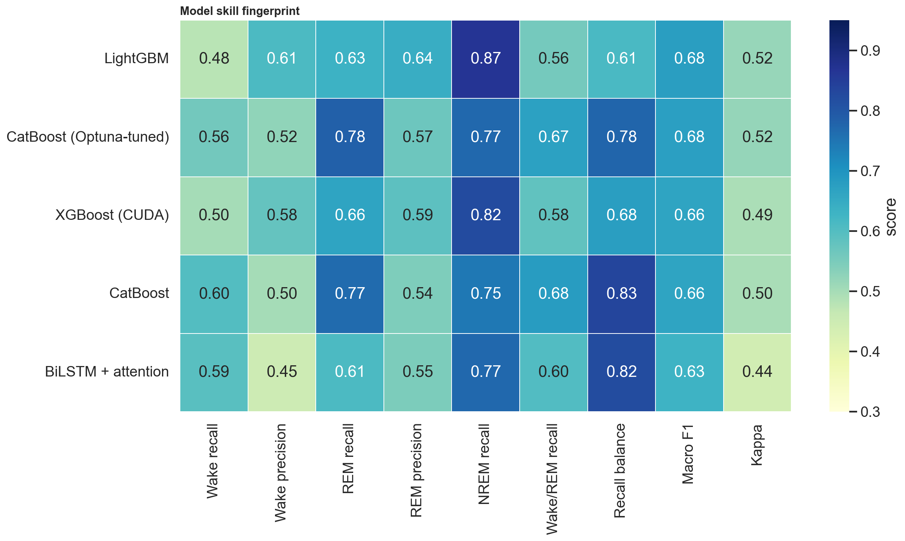
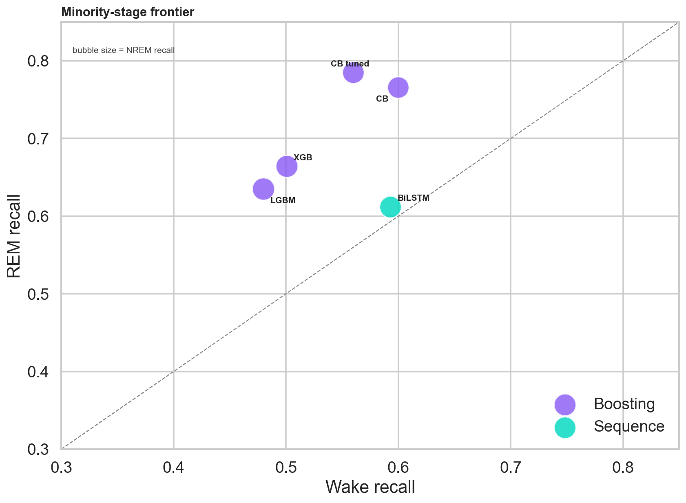
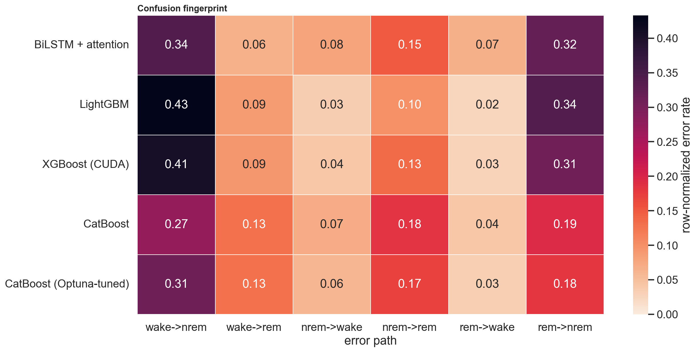
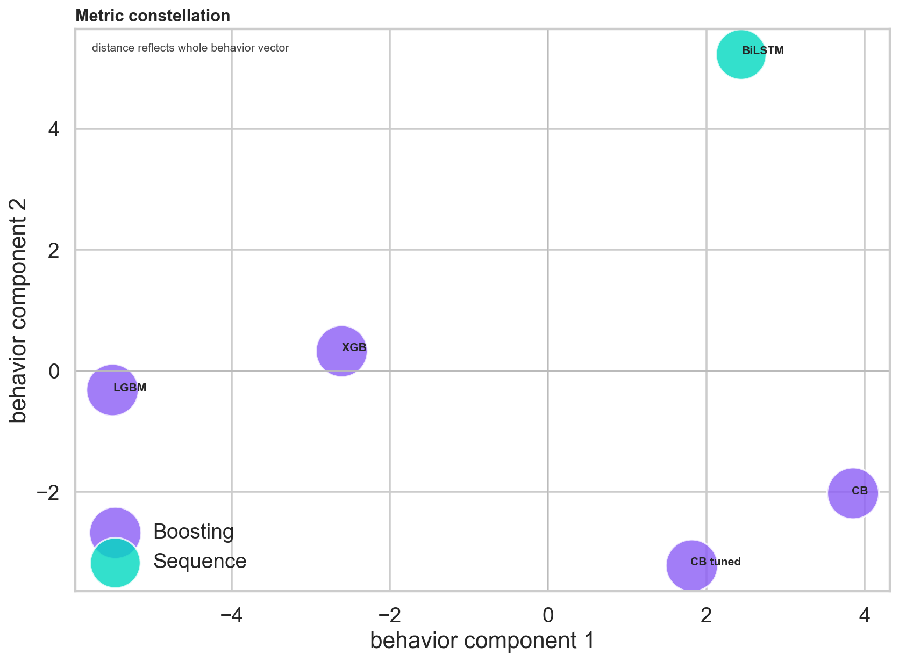
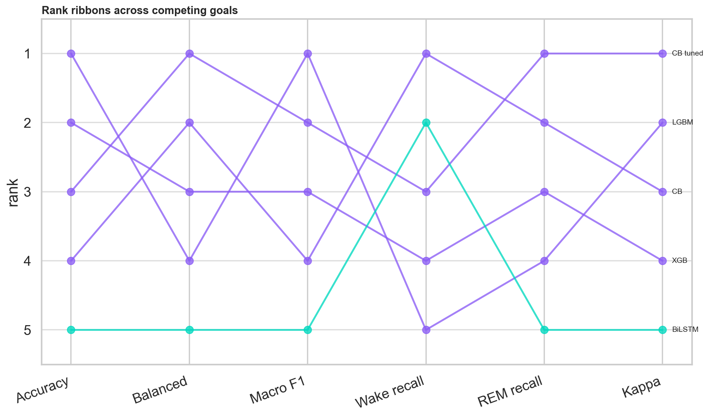
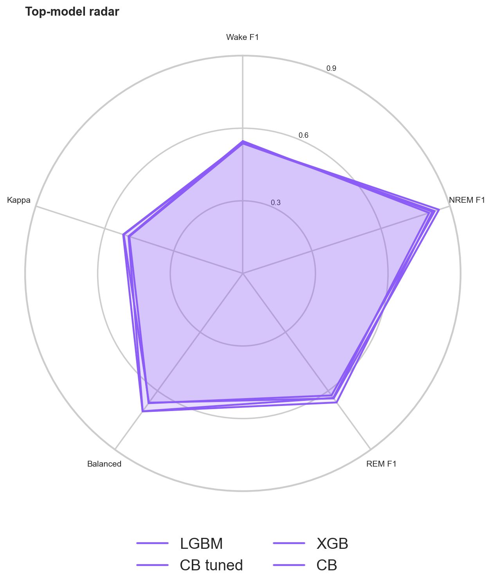
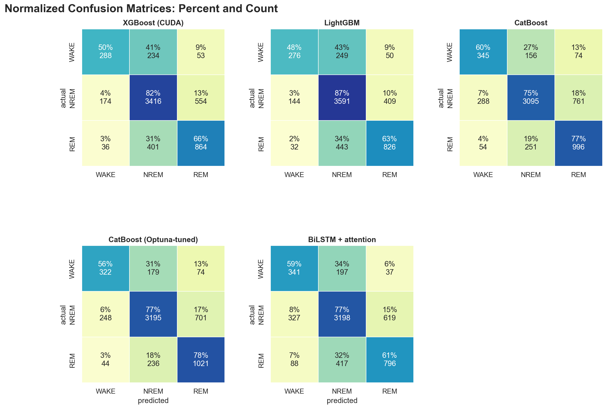

A behavior-first comparison of the five trained base learners and the 16 ensemble + HMM configurations. Each panel separates a different question — minority-stage recall, confusion patterns, ranking trade-offs across competing metrics. The final ensemble leaderboard at the bottom is the headline result; the per-model panels above explain why different models earn their places on it.
Six panels separated by question. Each card embeds a single panel so the labels stay readable.






Each cell shows row-normalized percent and raw count. Rows are actual stages; columns are predicted stages.

| model | family | accuracy | balanced_accuracy | macro_f1 | cohen_kappa | wake_recall | rem_recall | recall_balance |
|---|---|---|---|---|---|---|---|---|
| LightGBM | Boosting | 0.780 | 0.660 | 0.676 | 0.518 | 0.480 | 0.635 | 0.613 |
| CatBoost (Optuna-tuned) | Boosting | 0.754 | 0.705 | 0.675 | 0.520 | 0.560 | 0.785 | 0.775 |
| XGBoost (CUDA) | Boosting | 0.759 | 0.663 | 0.665 | 0.493 | 0.501 | 0.664 | 0.677 |
| CatBoost | Boosting | 0.737 | 0.704 | 0.664 | 0.497 | 0.600 | 0.766 | 0.834 |
| BiLSTM + attention | Sequence | 0.720 | 0.659 | 0.632 | 0.440 | 0.593 | 0.612 | 0.821 |
| label | NREM F1 | REM F1 | WAKE F1 |
|---|---|---|---|
| model | |||
| LightGBM | 0.852 | 0.639 | 0.537 |
| CatBoost (Optuna-tuned) | 0.824 | 0.659 | 0.542 |
| XGBoost (CUDA) | 0.834 | 0.623 | 0.537 |
| CatBoost | 0.810 | 0.636 | 0.547 |
| BiLSTM + attention | 0.804 | 0.578 | 0.512 |
The full ablation across every base model, every ensemble head (arithmetic mean, geometric mean, logistic-regression stack), and HMM/Viterbi smoothing applied per subject. The top two rows are the project's co-winners depending on which metric you optimize.
| Rank | Model | Accuracy | Bal acc | Macro F1 | Wtd F1 | Kappa |
|---|---|---|---|---|---|---|
| 1 | base_catboost_hmm | 0.7746 | 0.7159 | 0.6993 | 0.7793 | 0.5501 |
| 2 | avg_geo_hmm | 0.8035 | 0.6745 | 0.6932 | 0.7978 | 0.5695 |
| 3 | avg_mean_hmm | 0.8022 | 0.6733 | 0.6921 | 0.7965 | 0.5668 |
| 4 | avg_geo | 0.7772 | 0.6973 | 0.6901 | 0.7795 | 0.5388 |
| 5 | avg_mean | 0.7754 | 0.6975 | 0.6892 | 0.7780 | 0.5368 |
| 6 | base_catboost_tuned_hmm | 0.7816 | 0.6870 | 0.6814 | 0.7820 | 0.5515 |
| 7 | base_lightgbm | 0.7796 | 0.6605 | 0.6762 | 0.7761 | 0.5176 |
| 8 | base_catboost_tuned | 0.7538 | 0.7053 | 0.6750 | 0.7615 | 0.5201 |
| 9 | base_lightgbm_hmm | 0.7897 | 0.6332 | 0.6687 | 0.7794 | 0.5153 |
| 10 | base_xgboost_cuda_hmm | 0.7766 | 0.6456 | 0.6667 | 0.7715 | 0.5079 |
| 11 | stack_logreg_C0.3 | 0.7902 | 0.6234 | 0.6666 | 0.7762 | 0.4992 |
| 12 | base_xgboost_cuda | 0.7588 | 0.6631 | 0.6646 | 0.7599 | 0.4934 |
| 13 | base_catboost | 0.7369 | 0.7041 | 0.6641 | 0.7470 | 0.4968 |
| 14 | stack_logreg_C0.3_hmm | 0.7973 | 0.6096 | 0.6619 | 0.7795 | 0.5030 |
| 15 | base_bilstm_attention_hmm | 0.7312 | 0.6460 | 0.6368 | 0.7348 | 0.4462 |
| 16 | base_bilstm_attention | 0.7201 | 0.6589 | 0.6315 | 0.7273 | 0.4402 |
CatBoost is the standout single learner. Its raw probabilities have the highest balanced accuracy among single boosters and the highest minority-class recall. HMM smoothing then converts that minority-class strength into the project's best macro F1 (0.6993) and best balanced accuracy (0.7159) — without sacrificing the gains.
The geometric-mean ensemble + HMM (avg_geo_hmm) is the headline number. Log-averaging the base probabilities and then Viterbi-decoding the result crosses 80 % accuracy with Cohen's κ = 0.5695 — the strongest end-to-end configuration in the project. Geometric mean edges arithmetic mean by a hair because log-averaging is more robust to one model being confidently wrong.
The logistic-regression stack underperforms simple averaging. Base models perfectly memorize their training set, so the meta-learner fits on optimistic in-sample probabilities. Proper out-of-fold stacking would fix this at the cost of 5× the boosting compute — deferred work.
BiLSTM is the weakest single learner but a useful ensemble ingredient.
Macro F1 0.6315 alone, but it contributes meaningfully to avg_geo_hmm —
its different inductive bias gives the ensemble information the boosters lack.